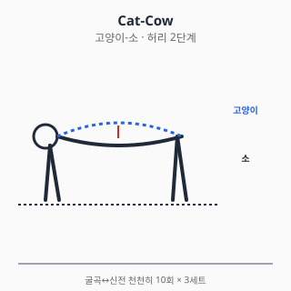
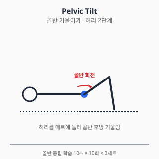
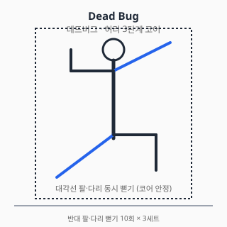
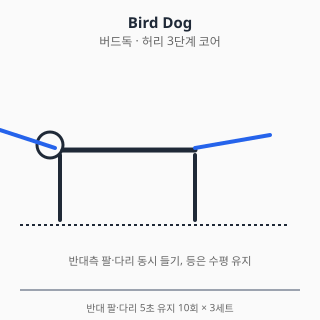
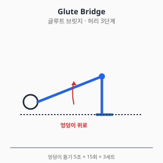

허리 통증 — 진단과 치료
⚠️ 본 문서는 교육 목적의 정보입니다.
진단·처방을 대체하지 않습니다. 증상이 지속·악화되면
정형외과 전문의 진료를 받으세요.
전체 면책 조항 →
0. 해부학 개요
- 요추 (Lumbar spine): L1~L5 척추체 + 추간판
- 추간판 (Disc): 수핵(nucleus pulposus) + 섬유륜(annulus fibrosus)
- 후관절 (Facet joint): 척추 후방 관절
- 신경: 척수신경근 L1~S1 출구, 마미(cauda equina) — L1 이하
- 근육: 척추기립근, 다열근(multifidus), 요방형근, 대요근
1. 흔한 증상·질환 (감별진단표 + 본문)
| 임상 양상 | 의심 질환 |
|---|---|
| 갑작스런 허리 통증 + 6주 이내 호전 | 비특이성 급성 요통 (가장 흔함) |
| 다리로 방사되는 통증 + 저림 | 추간판 탈출증 / 신경근 압박 |
| 보행 시 다리 저림·통증, 앉으면 호전 | 척추관 협착증 (cervical claudication) |
| 노인, 갑작스런 등 통증 + 신장 감소 | 골다공증성 척추 압박골절 |
| 허리 통증 + 발열 + 야간통 + 체중감소 | 감염 / 악성종양 (Red Flag) |
| 대소변 장애 + 회음부 감각저하 | 마미증후군 (응급) |
| 만성 후방 통증 + 회전·신전 시 악화 | 후관절증후군 (facet syndrome) |
| 청년기 + 아침 강직 1시간↑ + 휴식 시 악화 | 강직성 척추염 등 axSpA |
1.1 비특이성 요통 (Non-specific Low Back Pain)
- 가장 흔한 형태. 명확한 해부학적 원인 규명 어려운 경우.
- 자연경과: 약 90%가 6주 이내 호전. 영상검사 1차 권고 안 함 (NICE NG59).
- 위험인자: 직업적 부하, 흡연, 비만, 우울, 신체활동 저하.
1.2 추간판 탈출증 (HIVD)
- L4-5, L5-S1 호발. 청·중년 호발.
- 좌골신경통(sciatica) — 둔부 → 다리 후방·외측 방사통.
- SLR test 양성 (30~70°에서 통증 재현).
- 자연경과: 다수가 6~12주 보존치료로 호전.
1.3 척추관 협착증 (Spinal Stenosis)
- 60대 이상 호발.
- 신경원성 파행: 보행 시 다리 저림·통증, 앉거나 굽히면 호전 (cf. 혈관성 파행).
- 만성 진행성.
1.4 척추 압박골절 (Vertebral Compression Fracture)
- 골다공증 + 경미한 외상 (재채기, 가벼운 낙상).
- 갑작스런 등 통증, 신장 감소.
- 영상: 척추 높이 감소 (≥20%).
1.5 마미증후군 (Cauda Equina Syndrome)
- 응급: 즉시 응급실·신경외과.
- 거대 중심성 추간판 탈출, 종양, 외상 등.
- 4대 증상: 1. 양측성 다리 통증·저림 2. 안장 감각저하 (saddle anesthesia) 3. 대소변 장애 (요폐·실금) 4. 성기능 장애
1.6 강직성 척추염 / axSpA (Axial Spondyloarthritis)
- 청년기 (보통 45세 이전 발병).
- 염증성 요통의 4징후: 1. 아침 강직 1시간 이상 2. 휴식 시 악화·활동 시 호전 3. 야간 통증 (전반) 4. 점진적 시작
- HLA-B27 연관. 류마티스내과 의뢰.
2. 자가 체크리스트 (Red Flag) — 매우 중요
다음 중 하나라도 해당되면 즉시 진료 (악성·감염·골절·마미 감별):
- 🚨 대소변 장애·회음부 감각저하 → 마미증후군 응급
- 🩸 외상 후 즉시 통증 + 신경 증상
- 🌡️ 발열 + 야간통 + 체중감소 (악성·감염)
- 🔴 50세 초과 초발 또는 70세 초과
- 💉 면역억제·당뇨·정맥주사 약물 사용 (감염 위험)
- 🦴 골다공증 + 경미한 외상 후 갑작스런 등 통증 (압박골절)
- 📉 진행성 신경학적 결손 (점점 약해짐, 마비)
- 🌙 휴식 중에도 심해지는 통증 (악성 감별)
3. 진단
3.1 신체검사
| 검사 | 평가 대상 |
|---|---|
| SLR (Straight Leg Raise) | L4-L5, L5-S1 신경근 |
| Crossed SLR (반대측 양성) | 큰 디스크 탈출 |
| Femoral nerve stretch | L2-L4 |
| 마미 평가: 항문 긴장도, 회음부 감각 | 마미증후군 |
| Dermatome / Myotome | 신경근별 결손 위치 |
| Schober test | axSpA 척추 가동성 |
3.2 영상검사
- 1차 영상검사 권고 안 함 (NICE NG59 2016): 비특이성 급성 요통은 6주 보존치료 우선.
- X-ray: 골절·정렬·종양 의심 시
- MRI: 신경 결손, 마미증후군, 6주 이상 만성, 적색신호 양성 시
- CT: 골 구조 평가
- 혈액검사: CRP/ESR (감염·염증), CBC, ALP (악성)
4. 치료
4.1 약물
⚠️ 처방약은 의사 처방·약사 복약지도 하에 사용. 본 섹션은 교육 목적.
A. 일반의약품
A-1. 이부프로펜 / 나프록센 (경구 NSAID)
- 1차 권고 (NICE NG59 2016, ACP 2017): 급성·만성 비특이성 요통.
- 용량: 이부프로펜 200~400mg q6~8h (OTC 최대 1200mg/일), 나프록센 220~440mg q12h.
- 요통 단기 사용 원칙: 가급적 짧게 (1~2주), 최저 유효 용량.
- 위험 평가: 위장관(고령·궤양 기왕력), 신장(CKD·이뇨제 병용), 심혈관(허혈성 심질환).
- 상호작용: 와파린(출혈↑), ACEi/ARB+이뇨제(triple whammy AKI), 리튬·메토트렉세이트 농도↑, SSRI(GI 출혈↑).
A-2. 아세트아미노펜
- 단독 효과 미미 — Williams 2014 Lancet RCT에서 위약과 차이 없음. NICE NG59에서 권고 강도 약화.
- 위치: NSAID 금기자에서 보조 1차. 1g q6h (최대 4g/일).
- 간 위험: 음주자·만성 간질환자 2g/일 이하.
- 상호작용: 와파린 (INR↑ 보고).
A-3. 국소 NSAID
- 요통에서 근거는 무릎·손 OA보다 약함 — 깊은 척추 근육·신경에 침투 한계.
- 표재성 근육통(요방형근·기립근)에는 보조 가능. 디클로페낙·케토프로펜 패치.
B. 처방약
B-1. 근이완제 (에페리손, 톨페리손, 사이클로벤자프린)
- 적응: 급성 요통의 근경련 동반 시 단기 보조 (1~2주).
- 용법: 에페리손 50mg q8h, 톨페리손 150mg q8h, 사이클로벤자프린 5~10mg q8h.
- 부작용: 졸음·어지러움. 사이클로벤자프린은 강한 항콜린 작용 (구갈·요저류·고령 주의).
- 근거: 단기 통증 개선 보고 있으나 장기 사용 권장 안 됨. 운전·기계조작 주의.
B-2. 트라마돌 / 약한 오피오이드
- 1차 권고 아님 (ACP 2017): 다른 옵션 실패 후 단기.
- 용법: 50~100mg q6h (1일 최대 400mg, 고령 300mg).
- 위험: 의존성·내성·금단, 세로토닌 증후군 (SSRI/SNRI 병용 시).
- 상호작용: SSRI/SNRI/MAOI (세로토닌 증후군), CYP2D6 억제제 (효과 변동).
B-3. 가바펜틴 / 프레가발린 — 신경병증성 통증
- 추간판 탈출 좌골신경통에서 효과 제한적 (Mathieson NEJM 2017 — 위약과 차이 없음).
- 적응 외 사용 영역 흔함. 부작용(어지러움·졸림·체중증가) 대비 이익 작음.
- 신중 사용. 처방하더라도 단기 시도 후 효과 평가.
- 신기능 저하 시 용량 감량 (가바펜틴은 100% 신배설).
B-4. 듀록세틴 — 만성 요통
- ACP 2017 만성 요통 약한 권고.
- 만성 요통 + 우울·신경병증성 동반 시 고려.
- 용법: 30mg/일 시작 → 60mg/일 (식사 무관, 아침 권장).
- 상호작용: SSRI·트라마돌 (세로토닌 증후군), 와파린·NSAID (출혈 위험↑).
- 금기: MAOI 병용, 조절되지 않은 협각녹내장.
B-5. 강력 오피오이드 (모르핀, 옥시코돈 등)
- 만성 요통에 권장 안 됨: 이익 < 위험 (의존·과량·호흡억제).
- 단기·특수 상황(악성 통증·수술 직후)에서만 의사 판단.
- 한국에서 마약류 통합관리시스템(NIMS) 처방 보고 의무.
B-6. 경구 코르티코스테로이드 — 권장 안 됨
- 급성 좌골신경통에서 단기 사용 보고 있으나 (Goldberg JAMA 2015 일부 효과), 만성 요통에는 권장 안 됨.
- 부작용 부담(고혈당·골소실·감염 위험) 대비 이익 제한적.
C. 국소 주사 (의사 시술 영역)
C-1. 경막외 스테로이드 주사 (Epidural Steroid Injection)
- 추간판 탈출 좌골신경통에 단기(2~6주) 통증 개선 보고.
- 장기 효과·수술 회피 효과는 불일치.
- 빈도 제한 (연간 3~4회).
C-2. 후관절 주사 / 신경차단
- 후관절증후군 진단·치료 보조.
- 단기 효과 보고.
C-3. 주사 공통 안내 (부작용·금기·간격)
- 경막외·후관절 코르티코스테로이드 횟수: 연 3~4회 이하 권고. 동일 부위 재주사는 최소 3개월 간격 일반적.
- 일반 부작용: Steroid flare (24~48h 통증 악화), 두통(경막천공 시), 일시적 혈당 상승 (당뇨 환자 주의), 감염 (드뭄), 출혈.
- 금기·주의: 활동성 감염, 출혈 경향 (와파린·DOAC·항혈소판 사용 시 의사가 중단 여부 판단), 조절 안 되는 당뇨, 임산부, 척추 수술 후 부착 부위.
- 수유 중: 경막외 1회 주사는 일반적으로 모유 영향 미미하나 의사·약사와 사전 상담.
- 주사 후 24~48시간: 격렬한 운동 회피, 두통·발열·하지 마비 진행 시 즉시 진료.
출처: NASS Clinical Guidelines (Lumbar Disc Herniation, 2014 update) / UpToDate "Subacute and chronic low back pain: Nonpharmacologic and pharmacologic treatment" (2024) / 식약처 의약품 안전사용 정보
D. 상호작용 풀세트
| 약물 A | 약물 B | 상호작용 |
|---|---|---|
| NSAID | 와파린 / DOAC | 출혈 위험↑ |
| NSAID | ACEi + 이뇨제 | Triple whammy AKI |
| NSAID | SSRI / SNRI | GI 출혈↑ |
| 트라마돌 | SSRI / SNRI | 세로토닌 증후군 |
| 가바펜틴 | 아편유사제 | 중추신경 억제↑ (호흡억제 보고) |
| 사이클로벤자프린 | MAOI | 고열·경련 위험 |
| 듀록세틴 | 와파린 | 출혈 위험↑ |
| 오피오이드 | 벤조디아제핀 | 호흡억제·사망 위험↑ |
약물 섹션 출처
- 식약처 의약품안전나라. https://nedrug.mfds.go.kr (조회일: 2026-06-06)
- NICE Guideline NG59. Low back pain and sciatica in over 16s. 2016. https://www.nice.org.uk/guidance/ng59
- Qaseem A, et al. Noninvasive treatments for acute, subacute, and chronic low back pain: a clinical practice guideline from ACP. Ann Intern Med. 2017;166(7):514-530. doi:10.7326/M16-2367
- Williams CM, et al. Efficacy of paracetamol for acute low-back pain. Lancet. 2014;384:1586-1596. doi:10.1016/S0140-6736(14)60805-9
- Mathieson S, et al. Trial of Pregabalin for Acute and Chronic Sciatica. N Engl J Med. 2017;376:1111-1120. doi:10.1056/NEJMoa1614292
4.2 물리치료
- 운동치료: 만성 요통의 핵심 (NICE NG59 강한 권고).
- 도수치료(manipulation·mobilization): 운동치료 병행 시 효과 보고.
- 온열치료: 단기 통증 보조 (Cochrane 2006).
- TENS: 근거 일관되지 않음, 보조 사용.
- 마사지·침: NICE는 단독 권고하지 않음, 운동과 병행 시 보조.
- 요추 견인(traction): NICE 권고 안 함.
금기
- 마미증후군·진행성 신경 결손·감염 의심 시 모든 모달리티 금기, 즉시 응급실
- 압박골절 급성기 도수치료 금기
- 항응고제 복용자 도수치료 신중
4.3 스트레칭·재활운동
1단계 — 급성기 (0~2주)
- 활동 유지 (avoid bed rest) — NICE NG59 강조: 절대 안정 금기.
- 통증 한도 내 일상 활동 유지.
- 한랭치료 15~20분 → 이후 온열로 전환.
2단계 — 점진적 가동 (2~6주)
- 무릎 가슴으로 당기기 (Knee to chest): 좌골신경통 완화 자세
- 고양이-소 (Cat-cow): 척추 가동성

네발기기 자세에서 숨 들이마시며 등 내림(소), 숨 내쉬며 등 올림(고양이). 요추 전체 가동성을 점진 회복.
- 펠빅 틸트 (Pelvic tilt): 골반 중립 학습

누운 자세에서 허리를 매트에 누르며 골반을 후방으로 기울인다. 허리 안정화의 기본 패턴 학습 운동.
3단계 — 코어 강화 (만성기)
- 데드버그 (Dead bug): 누워서 반대쪽 팔·다리 뻗기 — 코어 안정성

허리는 매트에 누른 채로 대각선 팔·다리를 천천히 뻗는다. 허리가 들리면 강도를 낮춰야 한다. 코어 안정성과 신경근 조절을 동시에 훈련.
- 버드독 (Bird dog): 네발기기 자세에서 반대쪽 팔·다리 뻗기

등은 수평을 유지하면서 반대측 팔·다리를 5초간 유지. 다열근 활성에 효과적이라는 EMG 연구 (Stevens 2007).
- 사이드 플랭크 / 플랭크: 측면·전방 코어
- 글루트 브릿지 (Glute bridge): 둔근 활성

엉덩이를 들어올려 어깨–무릎이 일직선이 되게 한다. 둔근 약화는 허리 통증의 흔한 동반 요인 — 둔근 강화는 만성 요통 재발 예방에 기여.
4단계 — 통합 운동·기능
- McGill big 3: 컬업, 사이드 플랭크, 버드독 (McGill 2007 추천 조합)
- 걷기: 만성 요통 가장 안전한 유산소
- 수영·자전거: 충격 적은 유산소
5단계 — 직무 복귀·재발 예방
- 인간공학: 의자 높이, 모니터 위치, 들기 자세 교육
- 요추 안정화 패턴: 들기 동작은 무릎 굽혀·등 펴고
- 유연성: 햄스트링·고관절 굴근 (장요근) 스트레칭
운동 중단 신호
- 다리 저림·감각이상 증가
- 대소변 장애·회음부 감각저하 → 즉시 응급실
- 통증 NRS 5/10 초과 → 강도 하향
물리·재활 출처
- McGill SM. Low Back Disorders: Evidence-Based Prevention and Rehabilitation. 3rd ed. Human Kinetics; 2016.
- French SD, et al. Superficial heat or cold for low back pain. Cochrane Database Syst Rev. 2006;(1):CD004750. doi:10.1002/14651858.CD004750.pub2
- Hayden JA, et al. Exercise therapy for chronic low back pain. Cochrane 2021;(9):CD009790. doi:10.1002/14651858.CD009790.pub2
- Stevens VK, et al. Trunk muscle activity in healthy subjects during bridging stabilization exercises. BMC Musculoskelet Disord. 2007;8:90. doi:10.1186/1471-2474-8-87
5. 수술·전문의 의뢰 기준
5.1 추간판절제술 (Discectomy / Microdiscectomy)
- 적응: 6~12주 보존치료 실패 + MRI 일치 + 진행성 신경 결손
- 응급 적응: 마미증후군 — 48시간 이내 수술 우선
5.2 척추관 협착증 — 감압술 (Laminectomy)
- 보행 거리 단축 + 보존치료 실패 + 영상 일치
- 단순 감압 vs 유합술 동반 — 환자별 판단
5.3 척추 압박골절 — 척추성형술 (Vertebroplasty / Kyphoplasty)
- 보존치료 실패 + 지속 통증 + 골다공증 평가·치료 동반.
- 효과 근거는 연구마다 불일치 (Buchbinder NEJM 2009).
5.4 척추 유합술 (Spinal Fusion)
- 불안정성, 척추전방전위증, 변형, 종양·외상.
- 비특이성 만성 요통에서의 유합술은 근거 약함, 신중.
5.5 응급·즉시 의뢰
- 마미증후군 의심 → 즉시 응급실
- 진행성 마비·근력저하
- 발열 + 야간통 + 체중감소 (감염·악성)
- 외상 후 신경 증상
의사 섹션 출처
- Buchbinder R, et al. A randomized trial of vertebroplasty for painful osteoporotic vertebral fractures. N Engl J Med. 2009;361:557-568. doi:10.1056/NEJMoa0900429
- 대한척추신경외과학회 / 대한정형외과학회 진료지침
- NICE Guideline NG59 (위)
6. 통합 참고문헌
각 섹션 출처 참조.
7. 작성·검토·최종수정일
- 의사 / 약사 / 물치 / 재활: TBD
- 감사역 검수: 통과 (2026-06-06)
- 최종수정일: 2026-06-06
- 버전: 0.2.0
자주 묻는 질문 (FAQ)
허리 통증과 함께 대소변 조절이 안 돼요. 응급인가요?
허리 통증과 함께 대소변 장애, 회음부 감각저하, 양측 다리 마비가 동반되면 마미증후군(cauda equina syndrome) 응급입니다. 48시간 이내 수술이 권고되므로 즉시 응급실로 가셔야 합니다.
비특이성 요통도 MRI를 찍어야 하나요?
NICE NG59(2016) 가이드라인은 Red Flag가 없는 비특이성 급성 요통에서 1차 영상검사를 권고하지 않습니다. 약 90%가 6주 이내 호전됩니다. 다만 진행성 신경 결손·발열·외상 등 Red Flag가 있으면 영상검사가 필요합니다.